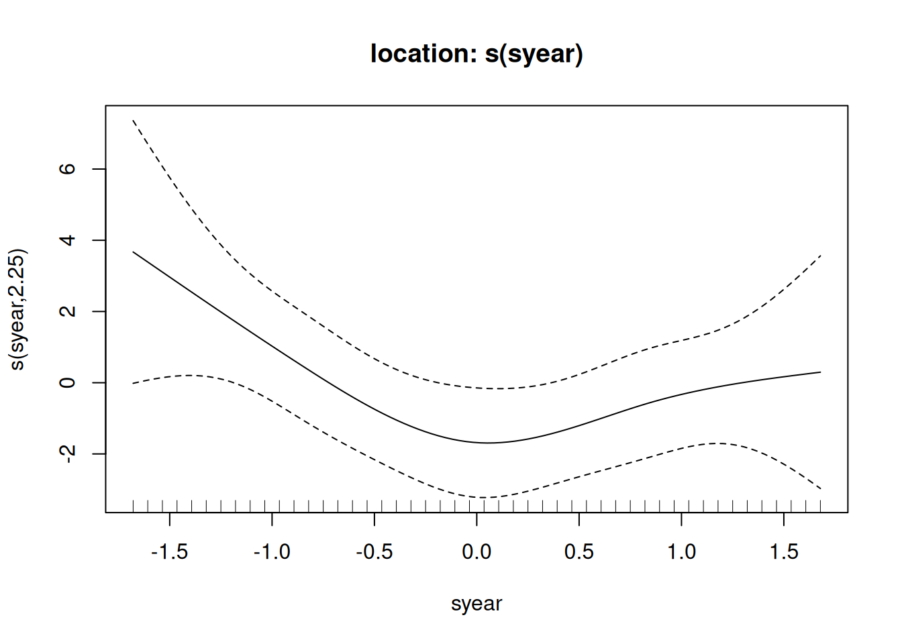

Most data encountered in applications display various forms of nonstationarity, including trends, time-varying variance, seasonality and covariate effects. In environmental applications, these may be partly attributed to the presence of different weather patterns or regimes, to climate change, etc. Extreme value distributions cannot capture these phenomena without modification. There is no general theory for nonstationary extremes, and therefore there are multiple strategies that one can consider for modelling.
The first consists in fitting a regression for the whole data and perform extreme value analysis with the residuals, as before assuming stationarity (Eastoe & Tawn, 2009). The second, proposed by Davison & Smith (1990), tries to incorporate covariates in the parameters \(\mu\), \(\sigma\), etc. — fixing the shape parameters is often recommended as it is hard to estimate.
General linear modelling would consist in regression models, e.g., \[\begin{align*}
\mu(\mathbf{X}) = \beta_0 + \beta_1 \mathrm{X}_1 + \cdots \beta_p \mathrm{X}_p,
\end{align*}\] and estimate as before parameters by maximum likelihood. The difficulty now is that there are more parameters to estimate and the support restriction translates into up to \(n\) inequality constraints, as they must be supported for every combination of covariates found in the database. These two facts mean numerical optimization is more difficult.
In models with a relatively large number of parameters, it is useful to include additive penalty terms to the log likelihood: for example, generalized additive models for the parameters include smooth functions, typically splines, with a penalty that controls the wiggliness of the estimated predictor functions. The latter is typically evaluated using the second-order derivative of the basis functions.
For example, consider a function of covariates \(f(x_j) = \sum_{k=1}^K \beta_k b_k(x_j)\), where \(b_k(\cdot)\) is a basis function, possibly with compact support. We typically penalize the squared second derivative of the function \(f(x)\) to control the wiggliness of the function. Since the regression coefficients \(\beta\)’s are constants, the penalty can be expressed in terms of the second derivative of the basis functions concatenated in a smooth matrix \(\mathbf{S}\) with \((i,j)\)th entry \(S_{ij} = \int b_i''(x) b_j''(x)\mathrm{d} x\), so the penalty can be written \(\lambda \boldsymbol{\beta}^\top \mathbf{S}\boldsymbol{\beta}\) for some tuning parameter \(\lambda \geq 0\) that controls the tuning. The penalty can be viewed in the Bayesian paradigm as an improper Gaussian prior. The optimal value of \(\lambda\) for smoothing is selected by maximizing the marginal likelihood: in high-dimensional settings, or when we include interactions through tensor products, etc., optimization of \(\boldsymbol{\lambda}\) is far from trivial.
The mgcv package in R allows for estimation of generalized additive models using the methods described above. There are multiple choice of basis functions that can be used, including the default thin-plate spline tp, cubic splines cs and cubic cyclic splines cc for cyclic covariates such as period of year. While most software for generalized additive models will allow for The smooths consisting of linear combination of basis functions
In nonstationary models, risk measures of interest are defined conditionally on the value of covariates: for example, the \(1-p\) conditional return level is (Eastoe & Tawn, 2009)\[\begin{align*}
\Pr(Y_t > y \mid \mathbf{X}_t =\boldsymbol{x}_t) = p
\end{align*}\] and the corresponding unconditional return level, \[\begin{align*}
\int_{\mathcal{X}} \Pr(Y_t > y \mid \mathbf{X}_t =\boldsymbol{x}_t) \mathrm{d} P(\boldsymbol{x}_t),
\end{align*}\] is obtained by averaging out over the distribution of covariates that are employed in the model. For future quantities, this may or not be a sensible risk summary to compute1 and may prove tricky to obtain as it requires either knowledge about the future distribution of the covariates, or else a perhaps unrealistically strong stationary assumption.
Some parametrizations are better suited than others for regression modelling: for the nonstationary case, the generalized Pareto model with varying scale and shape is not stationary unless, for any \(v\) greater than the original threshold \(u\), \[\begin{align*}
\sigma_v(\boldsymbol{x}_t) = \sigma_u(\boldsymbol{x}_t) + (v-u) \xi(\boldsymbol{x}_t)
\end{align*}\] which, even with constant shape \(\xi\) must imply a linear or constant functional form for \(\sigma_u\). Using the inhomogeneous Poisson point process representation avoids these problems.
Generalized additive models for extremes
The function evgam from the eponymous package allows one to specify smooth functional forms and objective estimation of the smoothing parameters using Laplace’s methods (Wood et al., 2016), building on the mgcv package of Simon Wood (Wood, 2017).
The setup is evgam(formula, data, family, ...), where formula is a list of formula for parameters (in the order location, scale, shape) and family is the character string for the extreme value distribution. Choices include gev, gpd, rlarg and ald for asymmetric Laplace, used in quantile regression, among other.
** Parametric terms **
location
Estimate Std. Error t value Pr(>|t|)
(Intercept) 36.62 0.66 55.46 <2e-16
logscale
Estimate Std. Error t value Pr(>|t|)
(Intercept) 1.36 0.12 11.23 <2e-16
shape
Estimate Std. Error t value Pr(>|t|)
(Intercept) -0.13 0.13 -0.99 0.162
** Smooth terms **
location
edf max.df Chi.sq Pr(>|t|)
s(syear) 2.25 4 5.62 0.0776
## Plot splines (if any)plot(opt_gev_spl)

## Fitted value, depend on covariates# predict(opt_gev_spl)
Interpreting the penalty as an improper Gaussian prior, we can view this model under the Bayesian lens. The posterior distribution isn’t available in closed-form, but we can do a Gaussian approximation at the mode on a suitable scale (e.g., log-scale), sample from this multivariate Gaussian approximation of \(p(\boldsymbol{\theta}) \stackrel{\cdot}{\sim}\mathsf{No}_p\) and transform them back on the parameter scale. Given draws of \(\boldsymbol{\theta}\), we can next simulate new realizations \(p(Y \mid \boldsymbol{\theta}, \mathbf{X}_{\text{new}})\) from the approximate posterior predictive for new combinations of covariates, or even for the data matrix that was used as covariates for the fitted model (default).
Figure 1 shows the output density for the location parameter for each time period in the records, as this is the only parameter that varies as a function of time (\(\log(\sigma)\) and \(\xi\) are drawn from the same marginal distribution, even if simulated sample values are different for each time period combination). If the model is severely overfitted, this will be visible because the posterior standard deviation will be tiny.
Figure 1: Density plots of 1000 posterior samples based on a normal approximation to the posterior of the location parameter of the generalized extreme value distribution, colored by year.
References
Davison, A. C., & Smith, R. L. (1990). Models for exceedances over high thresholds (with discussion). Journal of the Royal Statistical Society. Series B. (Methodological), 52(3), 393–442. http://www.jstor.org/stable/2345667
Eastoe, E. F., & Tawn, J. A. (2009). Modelling non-stationary extremes with application to surface level ozone. Journal of the Royal Statistical Society: Series C (Applied Statistics), 58(1), 25–45. https://doi.org/10.1111/j.1467-9876.2008.00638.x
Rootzén, H., & Katz, R. W. (2013). Design life level: Quantifying risk in a changing climate. Water Resources Research, 49(9), 5964–5972. https://doi.org/https://doi.org/10.1002/wrcr.20425
Wood, S. N. (2017). Generalized additive models: An introduction with r (2nd ed.). Chapman; Hall/CRC.
Wood, S. N., Pya, N., & Säfken, B. (2016). Smoothing parameter and model selection for general smooth models. Journal of the American Statistical Association, 111(516), 1548–1563. https://doi.org/10.1080/01621459.2016.1180986
Footnotes
What does return levels mean in a nonstationary climate? See Rootzén & Katz (2013) for an alternative.↩︎